SPICE
Il modello del BJT è stato tratto da circa 10 fonti diverse (il manuale di PSpice si è rivelato corretto).
La funzione HFE funzione delle 2 tensioni ha mostrato un massimo tendente a infinito, si sono introdotte allora delle condizioni al contorno.
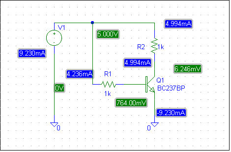
Introduzione
Utilizzando i modelli e le librerie di Spice, si vuole determinare il punto di lavoro ottimale dei bjt usati come amplificatori.
Nella realizzazione di amplificatori a transistor è indispensabile ottimizzare i parametri per massimizzare il guadagno ai piccoli segnali.
Consideriamo per semplicità un transistor nella connessione ad emettitore comune, affinchè lavori nella regione di massimo guadagmo occorre fissare due parametri. Questi parametri possono essere tensioni o correnti. A mio avviso trovo che sia comodo scegliere come parametri le correnti di base e di collettore.
Affinchè la simulazione abbia un riscontro pratico, è indispensabile utilizzare un certo numero di parametri di modello. Il guadagno di corrente statico  =
=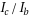
, graficato in funzione di 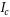
, presenta un massimo solo se si considerano, oltre ai parametri BF (BR), IS, VAF (VAR), anche IKF, IKR, etc.
Pertanto si cercherà di considerare un modello il più possibile raffinato, e si cercherà poi il massimo della funzione 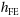
ricorrendo ad algoritmi numerici.
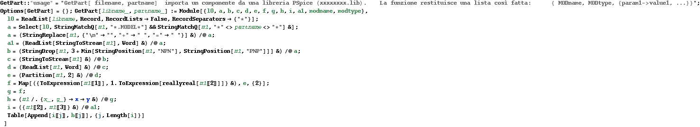
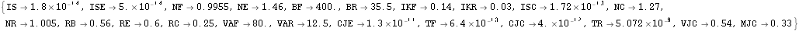
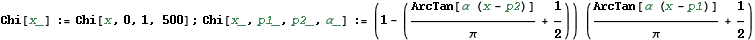
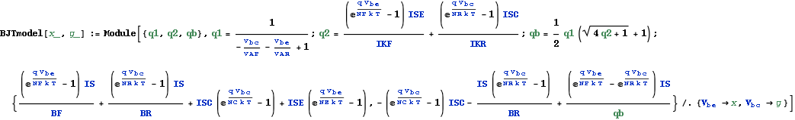
Limite sulla potenza max dissipata e sulle tensioni: 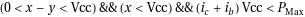
)
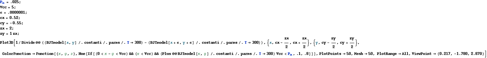
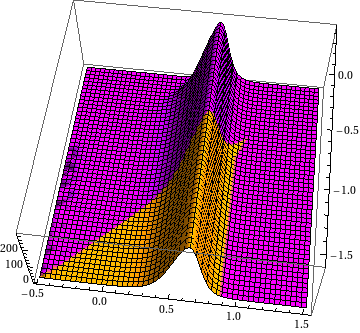
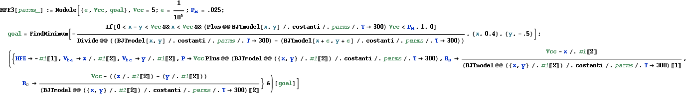
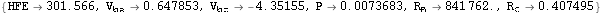
Result
Transistor NPN equivalenti
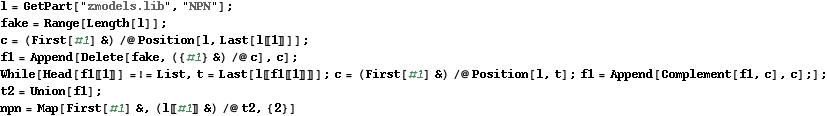
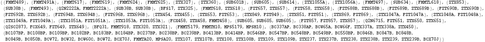
Prendiamo i rappresentativi di ogni raggruppamento calcoliamone l'HFE
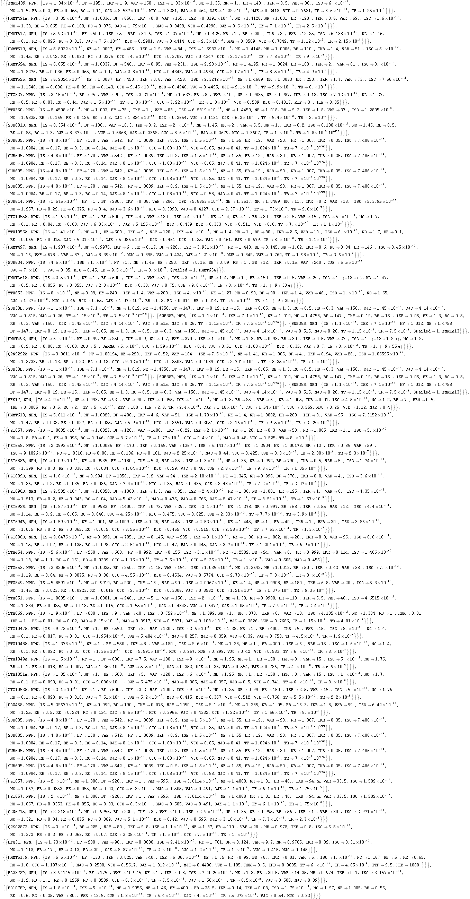
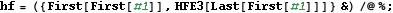
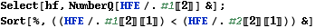
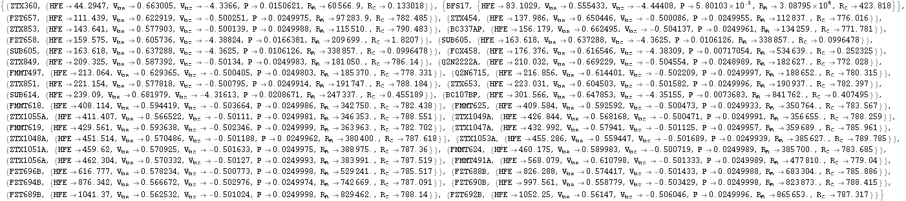